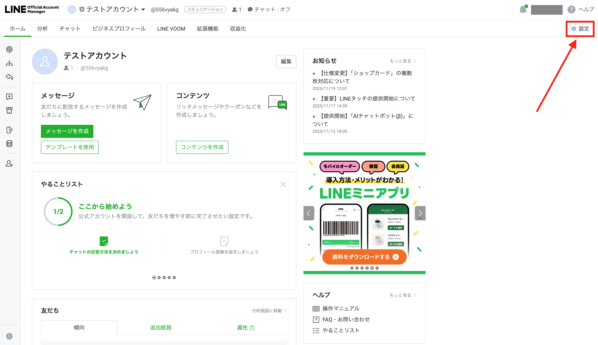
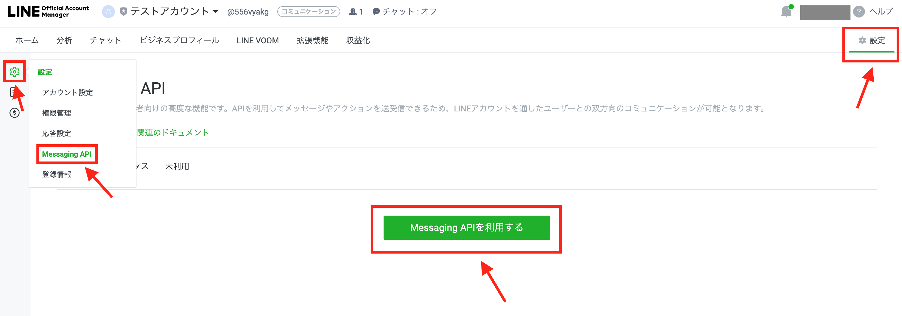

🤖【初心者向け】
LINE botでブロックチェーンにメッセージを記録しよう!
完全ガイド
📋 目次
🎯 はじめに
このガイドでは、LINEでメッセージを送るだけで
ブロックチェーンに記録が残るアプリを作ります！
例えば「📝 今日は楽しかった！」とLINE botに送ると、
そのメッセージがSymbolブロックチェーンに永続的に記録されます。
プログラミング経験ゼロでも大丈夫！
手順通りに進めれば、必ず完成します。
📦 準備するもの
以下のアカウントを作成する必要があります（無料で利用出来ます）:
- ✅ GitHubアカウント（コード保存用）
- ✅ LINE Developersアカウント（ボット作成用）
- ✅ Symbolウォレット（ブロックチェーン用）
- ✅ Renderアカウント（アプリ公開用）
📚 用語解説
🐙 GitHub（ギットハブ）
プログラムのコード（設計図）を保存・共有できるサービス。Google Driveのプログラム版だと思ってください。
🤖 LINE bot（ラインボット）
LINEで自動返信してくれるプログラム。普通の友達のようにトークできますが、実際はコンピューターが返事をしています。
🚀 Render（レンダー）
作ったプログラムを24時間稼働させてくれるサービス。自分のパソコンを使わずに、インターネット上でアプリを動かせます。無料プランでは15分アクセスが無いとスリープモードになります。
⛓️ Symbolブロックチェーン
データを改ざんできない形で記録する技術。一度記録されたメッセージは、誰も削除・変更できません。
🔗 Webhook（ウェブフック）
LINEでメッセージを送信したときに、自動的にあなたのアプリに通知してくれる仕組み。
🐙 ステップ1: GitHubアカウント作成とリポジトリフォーク
🎯 目標
GitHubアカウントを作成し、アプリのコードを自分のアカウントにコピーします。
📝 手順
-
GitHubアカウント作成
- https://github.com にアクセス
- 右上の「Sign up」をクリック
- ユーザー名、メールアドレス、パスワードを入力
- メール認証を完了
-
リポジトリをフォーク（コピー）
- https://github.com/mikunNEM/line-to-symbol にアクセス
- 右上の「Fork」ボタンをクリック
- 自分のアカウントを選択
- 「Create a new fork」をクリック
確認すべき箇所
• GitHubのトップページで「Sign up」ボタンが見える
• フォーク後、URL が「あなたのユーザー名/line-to-symbol」になっている
💡 重要なポイント
フォークが完了すると、コードがあなたのGitHubアカウントにコピーされます。これで自由に変更できるようになります。
✅ 完了チェック
- □ GitHubアカウントが作成できた
- □ line-to-symbolリポジトリをフォークできた
- □ 自分のアカウントにリポジトリが表示される
💬 ステップ2: LINE公式アカウントとMessaging APIの設定
🎯 目標
LINE公式アカウントを作成し、Messaging APIを有効化して、必要な認証情報を取得します。
📝 パート1: LINE公式アカウントを作成する
-
LINE Official Account Managerにアクセス
- https://manager.line.biz/ にアクセス
- 「LINEアカウントでログイン」をクリック
- 普段使っているLINEアカウントでログイン
-
アカウントを作成
- 左上の「作成 📝」ボタンをクリック
- 赤枠の所に情報を入力：今回はアカウント名「テストアカウント」としています。(好きな名称でOK)
- 利用規約に同意して「確認」、 「完了」をクリック
-
LINE公式アカウント作成完了
- 作成が完了すると、以下のような管理画面が表示されます
-
作成した「テストアカウント」を表示して、
-
右上の「設定」ボタンをクリック

-
左のサイドメニューから「Messaging API」をクリック
-
中央の「Messaging APIを利用する」をクリック
-
プロバイダー名は、適当な名前でOKです。今回は「ハンズオン勉強会」とします。
-
ここも空欄でOK
-
OKをクリック

LINE Develovers コンソールにログインすると、プロバイダーに「ハンズオン勉強会」があるのでクリックすると、以下のような表示になります。
📝 パート2: 認証情報を取得する
- チャネルシークレットを取得
- 「チャネル基本設定」タブをクリック
- コピーボタンをクリック
- コピーして メモ帳に 保存
-
Channel Access Tokenを発行
- 「Messaging API設定」タブをクリック
- 1番下にある「チャネルアクセストークン (長期)」
- 「発行」ボタンをクリック
- 発行されたトークンをコピーして メモ帳に 保存
💡 重要なポイント
チャネルシークレット と チャネルアクセストークン は後で使うので、必ずメモ帳などに保存してください！ 絶対に他人に見せないでください。これらは銀行のパスワードと同じくらい大切です。
✅ 完了チェック
- □ LINE公式アカウントを作成できた
- □ プロバイダーを作成できた
- □ Messaging APIチャネルを作成できた
- □ チャネルシークレット をメモ帳に保存した
- □ チャネルアクセストークン をメモ帳に保存した
💰 ステップ3: Symbolウォレット作成
🎯 目標
Symbolブロックチェーン用のウォレットを作成し、テスト用の暗号通貨を取得します。
📝 手順
以下のリンクからウォレットを作成してください。
💡 重要なポイント
秘密鍵は絶対に他人に見せないでください。この秘密鍵があれば誰でもあなたのウォレットを操作できてしまいます。
✅ 完了チェック
- □ Symbolウォレットをインストールした
- □ テストネット用ウォレットを作成した
- □ アドレスと秘密鍵を取得した
- □ テスト用XYMを受け取った（残高が表示される）
🚀 ステップ4: Renderでデプロイ
🎯 目標
GitHubのコードをRenderで24時間稼働するWebサービスとして公開します。(無料(Hobby)プランは15分アクセスが無いとスリープモードになります)
📝 手順
-
Renderアカウント作成 (無料プラン)
- https://render.com/ にアクセス
- 「Get Started」をクリック
- 「Sign up with GitHub」を選択
- GitHubアカウントでログイン・連携
-
新しいWebサービス作成
- ダッシュボードで「New +」→「Web Service」をクリック
- 「Connect a repository」の「Connect account」でGitHubを選択
- 「line-to-symbol」リポジトリを選択
- 「Connect」をクリック
-
サービス設定
- 「Environment 」で後ほど環境変数を設定
-
デプロイ開始
- 「Create Web Service」をクリック
- デプロイ完了まで数分待機
- 緑色の「✅ Deploy」表示が出ればOK
🖼️ 確認すべき箇所
• Renderダッシュボードでサービスが「 ✅ Deploy」になっている
• サービスURLが表示されている（https://〇〇.onrender.com）
💡 重要なポイント
この段階では環境変数を設定していないため、まだ正常動作しません。次のステップで設定します。
✅ 完了チェック
- □ Renderアカウントが作成できた
- □ GitHubリポジトリと連携できた
- □ Webサービスが「Live」状態になった
- □ サービスURLを確認した
⚙️ ステップ5: 環境変数設定
🎯 目標
アプリが動作するために必要な設定情報をRenderに登録します。
📝 手順
-
Renderの環境変数設定画面へ
- Renderダッシュボードで作成したサービスをクリック
- 左メニューの「Environment」をクリック
-
以下の環境変数を追加
NODE_URL:https://testnet1.symbol-mikun.net:3001 LINE_CHANNEL_SECRET: （ステップ2で取得したチャネルシークレット） LINE_ACCESS_TOKEN: （ステップ2で取得したチャネルアクセストークン） SYMBOL_PRIVATE_KEY: （ステップ3で取得した秘密鍵） SYMBOL_TO_ADDRESS:TANWG4F32RMJT6UEKA2COQPJERCDLHB34RIGBII -
各変数の意味
- NODE_URL: Symbolブロックチェーンに接続するサーバー
- LINE_CHANNEL_SECRET: LINE botの認証用
- LINE_ACCESS_TOKEN: LINE APIへのアクセス用
- SYMBOL_PRIVATE_KEY: トランザクション署名用の秘密鍵
- SYMBOL_TO_ADDRESS: メッセージを送信する先のアドレス
-
設定を保存
- すべての環境変数を入力後、「Save, Rebuild and Deploy」ボタンを押して反映させます。
- 自動的にサービスが再起動されます
💡 重要なポイント
環境変数の入力にスペースや改行が含まれないよう注意してください。コピー&ペーストする際は特に注意が必要です。
✅ 完了チェック
- □ 5つの環境変数をすべて設定した
- □ 設定を保存した
- □ サービスが再起動された
- □ エラーなく「 ✅ Deploy 」状態が維持されている
🔗 ステップ6: Webhook設定
🎯 目標
LINEでメッセージを受信したときに、Renderのアプリに通知されるよう設定します。
📝 手順
-
Webhook URLを確認
- RenderのサービスページでURLを確認
- URL末尾に「/webhook」を追加
- 例：https://line-to-symbol.onrender.com/webhook
-
LINE DevelopersでWebhook設定
- LINE Developersにアクセス
- 作成したチャネルを選択
- 「Messaging API」タブをクリック
-
「編集」をクリック、URLを入力して、「更新」をクリック
-
Webhookの利用をクリックする✅
-
応答メッセージを無効化
- 同じページの「 応答メッセージ」「あいさつメッセージ」をを「編集」でオフにして無効にする
ーーーーーーーーーーーーーーーーーーーーーーーーーー
-
Webhook接続テスト
- 「Webhook設定」の「検証」ボタンをクリック
-
- 「成功」と表示されればOK
💡 重要なポイント
Webhook URLは必ず「/webhook」で終わる必要があります。また、HTTPSである必要があります（RenderのURLは自動的にHTTPS）。
✅ 完了チェック
- □ RenderサービスのURLを確認した
- □ Webhook URLを正しく設定した
- □ Use webhookを有効にした
- □ 自動応答メッセージを無効にした
- □ Webhook接続テストが成功した
✅ ステップ7: 動作テスト
🎯 目標
LINE botにメッセージを送信して、正常にブロックチェーンに記録されることを確認します。
📝 手順
-
LINE botを友だちに追加 (LINEアカウントで公式アカウントを作った場合は既に友だちになっています)
- LINE Developersのチャネルページで「Messaging API」タブ
- 「QR code」セクションのQRコードをスマホで読み取り
- または「Your bot's basic ID」を友だち追加で検索
- 友だち追加を完了
-
テストメッセージを送信
- LINE botとのトーク画面を開く
-
以下のメッセージを送信：
📝 初回テストです！
- botからの返信を待つ（数十秒かかる場合があります）
-
成功パターンの確認
-
正常な場合、以下のような返信が来ます：
📝 ブロックチェーンに記録しました
https://testnet.symbol.fyi/transactions/XXXXX... - URLをタップして、Symbol Explorerでトランザクションを確認
-
正常な場合、以下のような返信が来ます：
-
その他のテスト
- 「note: 別のテストメッセージ」でも試してみる
- 「📝」なしのメッセージ（反応しないことを確認）
- 長いメッセージでのテスト
🖼️ 確認すべき箇所
• botから「ブロックチェーンに記録しました」の返信がある
• Symbol Explorerでトランザクション詳細が見える
💡 重要なポイント
メッセージは「📝」または「note:」で始める必要があります。これがないメッセージは無視されます。
✅ 完了チェック
- □ LINE botを友だちに追加できた
- □ テストメッセージに正常な返信がある
- □ Symbol Explorerでトランザクションを確認できた
- □ 複数パターンのテストが成功した
👀 ステップ8: ビューワーで確認
リアルタイムでトランザクションの様子を監視できるビューワーを使ってみます。
📝 手順
-
-
Symbol Live Tx Viewer をブラウザで開く
- 過去のトランザクション一覧が表示される
-
-
リアルタイム監視
- ビューワーを開いたまま、LINE botにメッセージ送信
- 新しいトランザクションが上部に表示される
- 最初は「UNCONFIRMED」（未承認）として表示
- 約30秒後に「CONFIRMED」（承認）に変わる
参考: 👉 server.js 解説
💡 重要なポイント
ビューワーは指定したアドレス宛のトランザクションのみを表示します。
✅ 完了チェック
- □ 過去のトランザクションが表示される
- □ リアルタイムで新しいトランザクションが表示される
🔧 トラブルシューティング
🚨 よくある問題と解決方法
❌ LINE botが反応しない
原因：Webhook設定の問題
解決方法：
- LINE DevelopersでWebhook URLが正しく設定されているか確認
- 「webhook」が「有効」になっているか確認
- Webhook接続テストを実行
- RenderサービスがLive状態か確認
❌ 「エラー: Announce failed」が返ってくる
原因：Symbolブロックチェーン関連の設定問題
解決方法：
- SYMBOL_PRIVATE_KEYが正しく設定されているか確認
- ウォレットにXYMが残っているか確認（手数料必要）
- NODE_URLが正しく設定されているか確認
- テストネット用の秘密鍵を使用しているか確認
❌ Renderサービスがエラーになる
原因：環境変数の設定問題
解決方法：
- 「Logs」タブでエラーメッセージを確認
- 環境変数に余分な空白や改行がないか確認
- すべての必須環境変数が設定されているか確認
- 「Manual Deploy」で再デプロイを試行
🔍 デバッグ手順
-
Renderのログを確認
- Renderダッシュボード → サービス → 「Logs」タブ
- エラーメッセージがないか確認
-
環境変数を再確認
- 「Environment」タブで全項目をチェック
- 値に余分な文字がないか確認
-
段階的にテスト
- まず簡単なメッセージでテスト
- Webhook接続テストを実行
- Symbol Explorerでアドレスを直接確認
🎨 カスタマイズ方法
基本的なカスタマイズ方法を学び、あなただけのオリジナル機能を追加できるようになります。
🛠️ 簡単なカスタマイズ
💬 メッセージのトリガーを変更
「📝」以外の文字でもメッセージを記録できるようにする
//新しいトリガー追加
const isNote = text.startsWith("📝") || text.startsWith("🎯") ||
text.toLowerCase().startsWith("note:");
💰 送信するXYM金額を変更
メッセージと一緒に少額のXYMを送信する
new models.Amount(1000000n) // 1 XYMを送信（元は0n）
🎨 返信メッセージをカスタマイズ
成功時の返信メッセージを変更する
await replyLine( replyToken, `🎉 あなたのメッセージを永続保存しました！\n${url}` );
📚 学習リソース
✅ 次のステップ
- □ 簡単なカスタマイズを1つ試してみる
- □ GitHubでコードの変更をコミットしてみる
- □ 友達にLINE botを紹介してみる
🎉 お疲れ様でした！
あなただけのLINE bot + ブロックチェーンアプリが完成しました！
メッセージを送るたびに、永続的な記録がブロックチェーンに刻まれます。
これであなたも立派なブロックチェーン開発者です！🚀